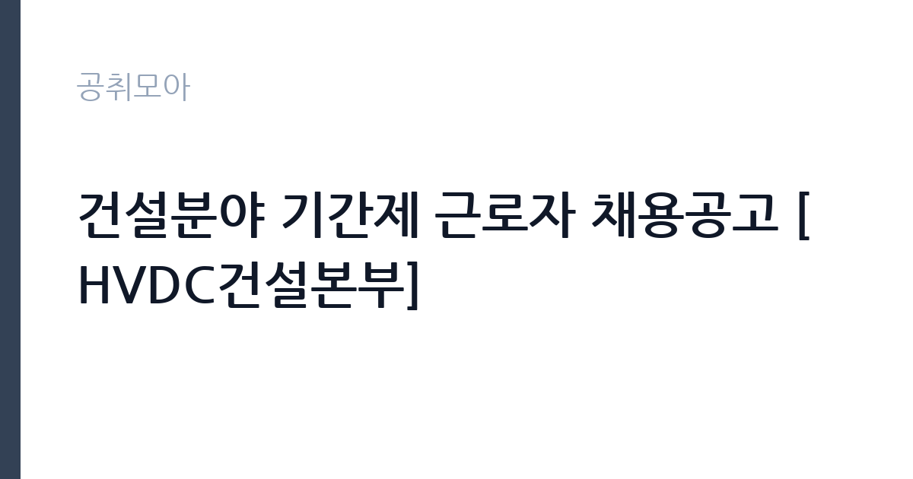

[공공기관] 건설분야 기간제 근로자 채용공고 [HVDC건설본부]
한국전력공사 · 경기 · 마감 2026-11-16 (D-15) · 출처 잡알리오

한눈에 보는 모집 조건
| 기관 | 한국전력공사 |
|---|---|
| 공고명 | 건설분야 기간제 근로자 채용공고 [HVDC건설본부] |
| 고용형태 | 기간제 |
| 근무지 | 경기 |
| 게시일 | 2026-11-02 |
| 마감일 | 2026-11-16 (D-15) |
지원자격, 이렇게 읽으세요
- 공공기관 채용공시
- 세부 조건은 원문 공고문 확인
응시자격은 두 갈래 경력요건 가운데 하나를 충족하면 됩니다. 첫째는 정부·지자체·공공기관이나 입지선정·설계·시공·공사감리 업체에서 해당분야 관련 부서 근무경력 8년 이상입니다. 둘째는 소방(전기·기계) 분야의 설계, 시공, 건설사업관리 업무경력 2년 이상입니다. 두 번째 경로를 활용하면 경력 2년으로도 지원할 수 있습니다. 병역법 제76조에 따른 병역의무 불이행 사실이 없어야 하고, 2026년 12월 1일 근무시작일부터 근무가 가능해야 합니다. 결격사유는 한전 인사관리규정 제11조를 따르며 세부 내용은 첨부 공고문에 있습니다.
이 공고의 포인트
첫 번째 포인트는 2년 경력 경로입니다. 같은 공고에서 8년 경력과 2년 경력을 나란히 인정하고 있어, 소방 설계·시공 경력자라면 경력이 짧아도 지원할 수 있습니다. 두 번째는 서류전형 방식입니다. 공고문은 1차 서류전형을 적·부 판정으로 운영해 적합자는 전원 합격시키고, 2차 면접전형 100점으로 당락을 정합니다. 서류 배점 경쟁이 없다는 뜻입니다. 세 번째는 HVDC 건설본부라는 조직입니다. 초고압 직류 송전은 최근 전력계통 확충의 핵심 사업으로, 이 분야 건설 경험은 이력서에 남는 실적이 됩니다. 다만 근무 기간이 정해진 기간제라는 점은 감안해야 합니다.
전형은 어떻게 진행되나
1차 서류전형은 적·부 판정으로 진행하고 적합자는 전원 합격시킵니다. 2차 면접전형은 한전 면접 평가표에 따라 100점 만점으로 시행하고 1배수를 선발합니다. 접수는 한전 채용 홈페이지(recruit.kepco.co.kr/sangsi)에서 온라인으로만 받고, 접수기간은 2026년 11월 2일 월요일 오후 2시부터 11월 16일 월요일 오후 4시까지입니다. 취업지원대상자는 면접전형 동점자 처리 시 우선순위가 적용되고, 우대자격증 보유자에게는 별도 우대가 주어집니다.
원문에서 확인한 전형 방식
□ 자격사항 : 아래 자격사항(①,②) 중 하나 이상의 경력 보유자 ① 정부, 지자체, 공공기관 또는 입지선정·설계·시공·공사감리업체 회사의 해당분야 관련 부서 근무경력 8년 이상 ② 소방(전기, 기계) 분야의 설계, 시공, 건설사업관리 업무경력 2년 이상 □ 병역사항 : 병역법 제76조에서 정한 병역의무 불이행 사실이 없는 자 □ 기타 : 근무시작일('26. 12. 1)부터 근무 가능한 자 ※ 자세한 사항은 붙임의 채용공고문 참조
이런 분께 추천해요
- 소방(전기·기계) 분야 설계·시공·건설사업관리 경력 2년 이상인 분. 경력요건의 두 번째 경로입니다.
- 전력·플랜트 건설 분야에서 8년 이상 근무한 경력자. 첫 번째 경로에 해당합니다.
- 2026년 12월 1일부터 근무할 수 있는 분. 근무시작일이 응시자격에 명시되어 있습니다.
지원 전 체크리스트
- 두 경력요건 가운데 하나를 충족하는가. 8년 경력 또는 소방분야 2년 경력입니다.
- 경력증명서에 근무부서와 담당업무가 구체적으로 적혀 있는가. 서류전형이 적·부 판정이라 증빙이 곧 결과입니다.
- 병역의무를 이행했거나 면제받았는가. 병역법 제76조 기준이 적용됩니다.
- 2026년 12월 1일부터 근무가 가능한가. 근무시작일이 명시되어 있습니다.
모집 일정과 제출 타이밍
접수는 2026년 11월 2일 월요일 오후 2시에 시작해 11월 16일 월요일 오후 4시에 마감합니다. 한전 채용 홈페이지를 통한 온라인 접수만 인정됩니다. 근무시작일은 2026년 12월 1일이고, 계약 기간은 원문 공고문에서 확인해야 합니다. 서류전형과 면접전형 일정, 최종합격자 발표일은 공고문에 날짜로 제시되어 있지 않아 접수 후 한전 채용 홈페이지 공지를 확인해야 합니다. 문의는 채용 홈페이지 안내를 따르십시오.
직무 이해하기: 공공기관
HVDC는 초고압 직류 송전을 뜻합니다. 교류 송전보다 손실이 적고 장거리 전송에 유리해, 한전은 서해안과 동해안 발전단지에서 생산한 전력을 수도권으로 보내는 사업을 진행하고 있습니다. 건설분야 기간제 근로자는 변환소와 송전선로 건설 현장에서 설계 검토와 시공 관리, 공정·안전 확인 업무를 지원합니다. 소방 설비는 변환설비 화재 대응과 직결되므로 전기·기계 계통의 소방 설계와 시공 경험이 직접 쓰입니다. 사무실과 현장을 오가며 협력업체와 일정을 조율하는 일이 많습니다.
자기소개서 작성 팁
서류전형이 적·부 판정이므로 자기소개서는 면접의 재료로 쓰입니다. 첫 문단에서는 소방 분야 설계·시공 경력의 기간과 참여한 사업 규모를 숫자로 제시하십시오. 두 번째 문단에서는 본인이 맡았던 역할을 설계, 시공, 감리 가운데 어디에 두었는지 명확히 하고, 관련 법규나 기준을 적용한 사례를 한 가지 넣으십시오. 세 번째로는 HVDC나 변전 분야에 대한 이해를 짧게 보여주십시오. 직접 경험이 없다면 유사한 특수 설비 현장 경험을 연결해 설명하면 됩니다. 기간제 채용이라는 점을 이해하고 있다는 표현은 한 줄로 짧게 처리하십시오.
면접 준비 포인트
면접은 100점 만점으로 한전 면접 평가표에 따라 진행됩니다. 질문은 세 갈래로 예상됩니다. 첫째 소방 설비 실무입니다. 설계도 검토 시 확인하는 항목, 시공 중 발견한 문제와 조치 경험을 묻습니다. 둘째 건설현장 관리입니다. 협력업체와 공정이 어긋났을 때 어떻게 조율했는지가 단골 질문입니다. 셋째 안전과 법규 준수입니다. 소방시설공사 관련 기준을 어떻게 적용했는지 구체적으로 답할 준비를 하십시오. 취업지원대상자는 동점 시 우선순위가 적용되므로 해당되면 관련 증명서를 미리 준비하십시오.
급여·근무조건 읽는 법
공고문에는 임금이 금액으로 명시되어 있지 않아 원문 공고문과 한전 채용 담당 확인이 필요합니다. 참고로 알리오 2025년 결산 공시 기준 공공기관 전체 일반정규직 1인당 평균보수는 7,376만 9천원, 신입사원 평균초임은 4,031만 6천원입니다. 다만 이번 채용은 기간제 근로자라 정규직 공시값이 그대로 적용되지 않고, 한전의 기간제 임금 기준과 경력 인정 결과에 따라 정해집니다. 경력 8년 경로로 지원하는 경우 경력 인정이 급여 산정에직접 영향을 주므로 경력증명서를 최대한 구체적으로 준비하는 편이 좋습니다. 수당과 계약 기간은 원문에서 확인하십시오.
자주 묻는 질문
- 경력이 2년뿐인데 지원할 수 있나요?
소방(전기·기계) 분야 설계·시공·건설사업관리 경력 2년 이상이면 지원할 수 있습니다. 공고문이 8년 경력과 2년 경력 두 갈래 요건을 제시하고 있습니다. - 서류전형에서 점수를 보나요?
공고문은 1차 서류전형을 적·부 판정으로 운영하고 적합자는 전원 합격시킨다고 안내하고 있습니다. 당락은 2차 면접전형 100점으로 결정됩니다. - 계약 기간은 얼마나 되나요?
공고문에 계약 기간이 명시되어 있지 않습니다. 근무시작일은 2026년 12월 1일이며, 기간과 갱신 조건은 원문 공고문에서 확인해야 합니다.
함께 보면 좋은 공고
[공공기관] 대한적십자사 인천사할린동포복지회관 직원(요양보호사) 채용 공고 — 마감 2026-11-17[공공기관] 대한적십자사 인천사할린동포복지회관 직원(요양보호사) 채용 공고 — 마감 2026-11-17[공공기관] [부산보훈병원] 업무지원직(급식) 보훈특별고용 — 마감 2026-11-12출처: 잡알리오 공개정보를 바탕으로 공취모아가 정리한 안내글입니다. 모집 조건·일정은 변경될 수 있으니 지원 전 반드시 원문 공고문을 확인하세요. 본 글은 정보 제공용이며 합격을 보장하지 않습니다.